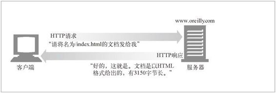

1.2 Web 客户端和服务器
Web 内容都是存储在 Web 服务器上的。Web 服务器所使用的是 HTTP 协议，因此经常会被称为 HTTP 服务器。这些 HTTP 服务器存储了因特网中的数据，如果 HTTP 客户端发出请求的话，它们会提供数据。客户端向服务器发送 HTTP 请求，服务器会在 HTTP 响应中回送所请求的数据，如图 1-1 所示。HTTP 客户端和 HTTP 服务器共同构成了万维网的基本组件。

图 1-1 Web 客户端和服务器
可能你每天都在使用 HTTP 客户端。最常见的客户端就是 Web 浏览器，比如微软的 Internet Explorer 或网景的 Navigator。Web 浏览器向服务器请求 HTTP 对象，并将这些对象显示在你的屏幕上。
浏览一个页面时（比如 http://www.oreilly.com/index.html），浏览器会向服务器 www.oreilly.com 发送一条 HTTP 请求（参见图 1-1）。服务器会去寻找所期望的对象（在这个例子中就是 /index.html），如果成功，就将对象、对象类型、对象长度以及其他一些信息放在 HTTP 响应中发送给客户端。